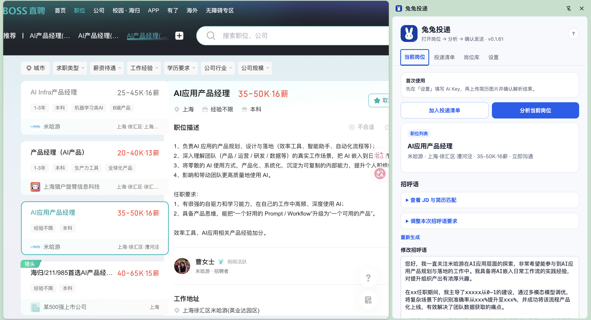
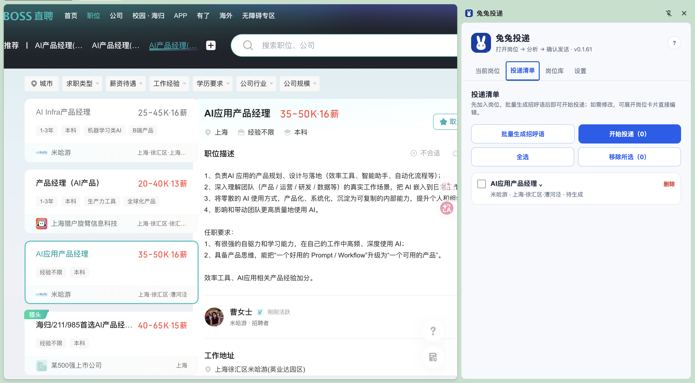
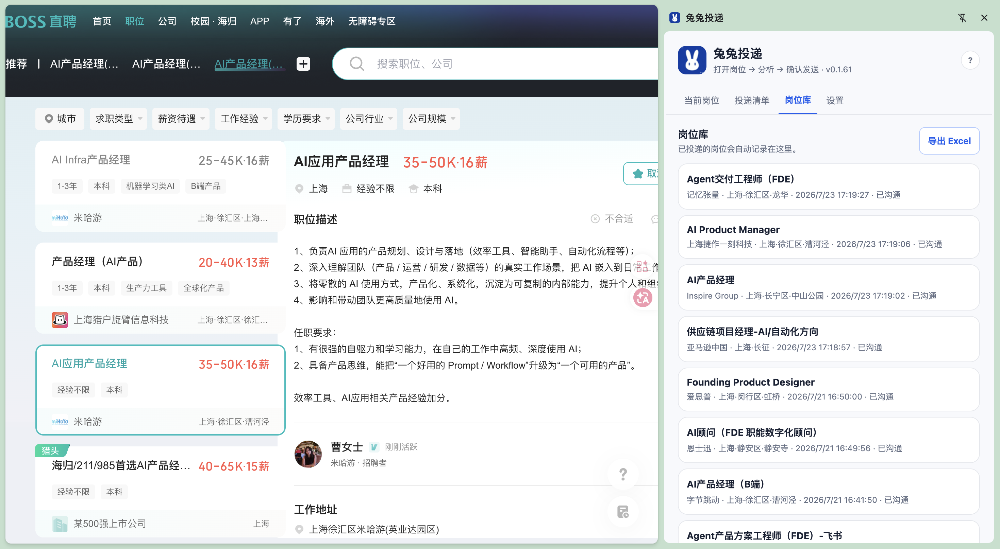
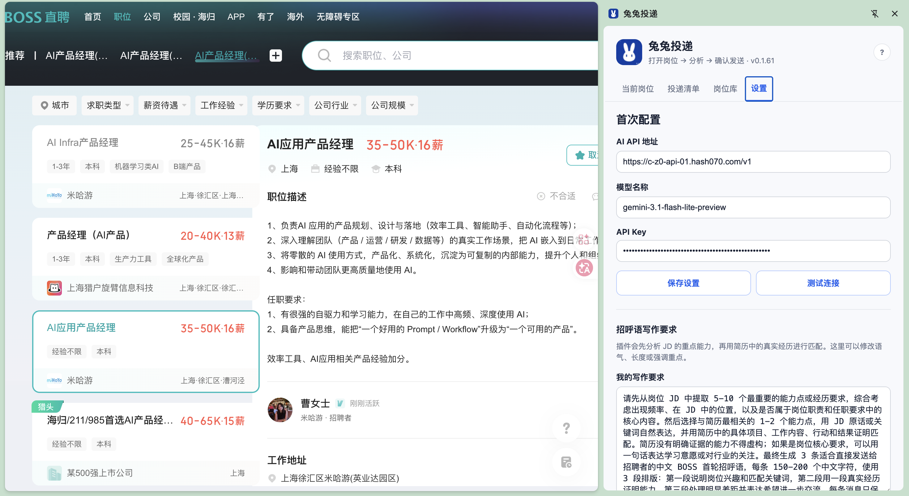
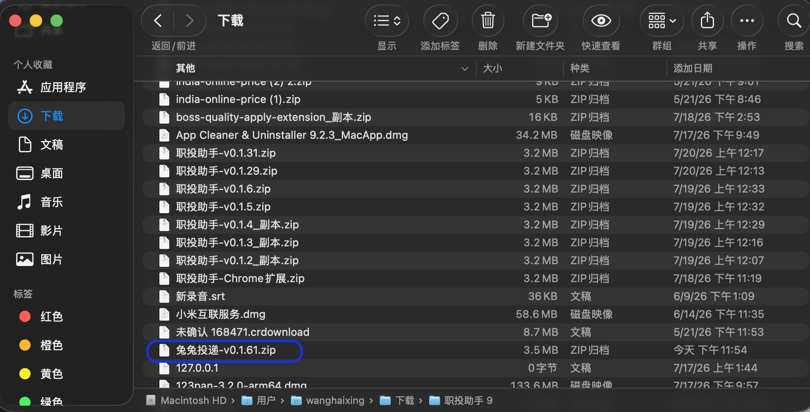
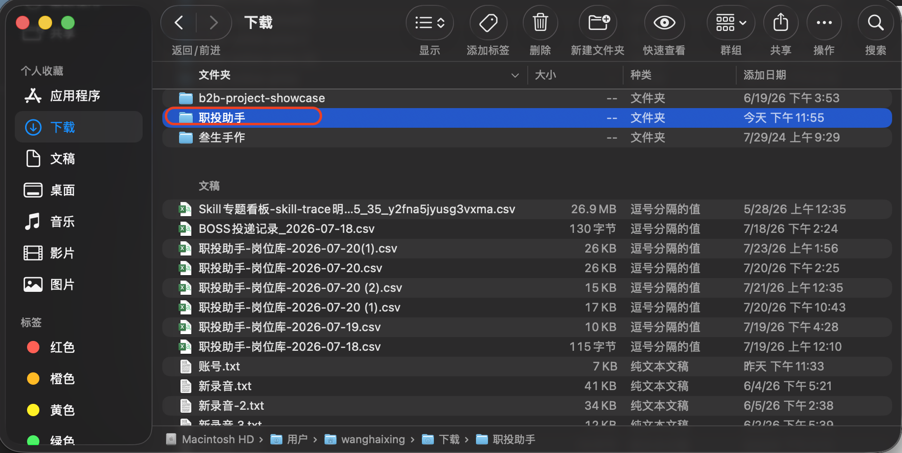
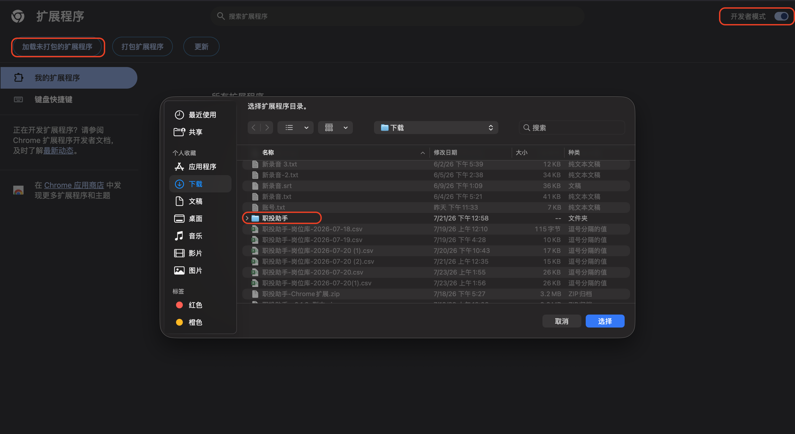

01
分析与投递
读取当前岗位的 JD，结合简历提炼重点，生成可直接修改的招呼语。
Chrome 扩展 · BOSS 直聘求职助手
兔兔投递会读取岗位 JD，用你的简历生成更有针对性的招呼语，并帮你批量管理投递记录。
免费使用 · 需要你自己的 AI API Key

四个核心功能
不用复制 JD，不用在多个页面之间来回切换。
读取当前岗位的 JD，结合简历提炼重点，生成可直接修改的招呼语。

先把岗位加入清单，批量生成招呼语后，逐岗自动完成投递流程。

成功投递会自动归档，可查看公司、岗位、时间和状态，也支持导出 Excel 兼容 CSV。

填写你自己的 OpenAI 兼容 API 地址、模型名称和 API Key，简历与密钥只保存在本机。
三步安装
点击上方“下载兔兔投递”，解压 ZIP 文件，保留其中的“职投助手”文件夹。

在 Chrome 地址栏打开 chrome://extensions，开启右上角的“开发者模式”。

点击“加载已解压的扩展程序”，选择解压后的“职投助手”文件夹即可。

下载扩展后，在设置中填写 AI API Key，再打开任意 BOSS 岗位页即可使用。